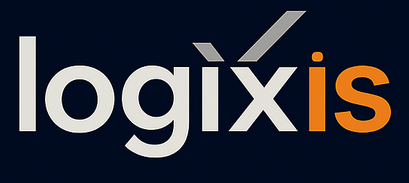

Designed as the central software layer for weighbridge operations, WBOS™ manages workflows, integrates hardware and ensures every transaction follows the same precise, unmanned sequence. A fully guided, driver-self-service workflow that controls hardware, captures compliance data and synchronises securely, whether you choose Australian cloud hosting or prefer to operate entirely on-premise.
Developed as the operating system for modern weighbridge environments, WBOS™ standardises workflows, improves safety, reduces staffing requirements and ensures consistent, reliable operation across single or multi-site networks.
WBOS™ is implemented by Logixis certified integration specialists, who configure terminals, cameras, gates, lights and communication hardware to operate seamlessly with your existing weighbridge infrastructure. Once installed, any weighbridge service provider can maintain your hardware. WBOS™ remains fully compatible and does not require exclusive vendor arrangements.
WBOS™ by Logixis delivers a connected ecosystem of modules that manage workflows, compliance, devices and driver interaction.
All sites share real-time data, rules and workflows through secure Australian hosting.
Continuous cloud deployment ensures every site runs the latest features automatically.
Encrypted communication and strict authentication protect operational and regulatory data end-to-end.
Works with existing indicators, gates, cameras and terminals without vendor lock-in.
Captures axle, GVM, material and environmental data required for regulated reporting.
A guided software sequence enabling safe, consistent vehicle processing without on-site staff.
Get notified as we roll out new modules, compliance features and platform upgrades.